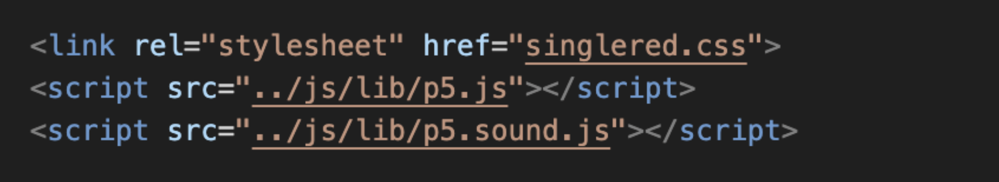

May 6, 2024
Pick a mood for the day, and we will provide music information you should check out! Feel free to explore the four tabs at the top to learn more.
Abstract (The present shapes the future): If this is your first time using this platform, you'll embark on a journey of self-discovery as you record your current mood for the day. It's an opportunity to capture the nuances of your emotions and experiences. Afterward, unlock new discoveries of recommended songs carefully curated to elevate your mood, ranging from soothing melodies to upbeat tunes. When you return to the platform in the future, it becomes a reflective sanctuary, allowing you to delve into your past moods and rediscover the music that resonated with you before. As time progresses, this platform evolves into a nostalgic memory lane. Imagine years down the line, flipping through your emotional journal and revisiting the soundtrack of your life. Whether it's the latest hits or timeless classics, this platform becomes a keeper of precious memories, documenting your emotional journey and reminding you of the moments that shaped your life.
Conceptual Slides →For this project, I was inspired by the Spotify DJ which utilizes past songs that users listen to to recommend songs. However, instead, I wanted to record something that had a more emotional attachment. Each day, we listen to music depending on our mood, whether it's quiet lofi songs when you're studying, emo songs when you need a good cry, or upbeat songs when you're happy. In this way, music has become a representation of our daily emotions. For this project, I will be utilizing songs that the users will play to create a calendar in which users can look back on previous emotions as it'll record emotions, such as sad, mad, happy, chill, etc.
I chose sound as my main interaction as that is the main independent variable in this project, other interactions will include mouse clicking to let the user move throughout the different interfaces. In addition, I chose a calender setup as it is an organized way to record past events.
I hope through this project, which builds a unique musical emotion profile for users, users can understand their own musical preferences more. I will also include recommendations in the projects, such as songs under a similar genre or carry the same beat for the users to explore. By doing so, I hope users can also expand their musical preferences and explore other songs.
In the beginning, I wanted to correlate journaling and music, two irreplaceable things in my life. In the start, I wanted to utilize music to decide the user's mood, however as I wasn't skilled with using frequency, in the end, I flipped this relationship. This worked out in the end because I personally understand more about music than emotions, so I can provide the audience with more knowledge relating to music. Plus, music is something I enjoy, so in the process of making my process, it felt motivating as I learned more about myself in this project (I even learned to sort my Spotify playlists based on my mood).
For my project appearance, I first looked on Pinterest to see website designs I liked, and I settled for a minimalistic aesthetic, however, I also like making cartoons as they add a friendly approach to my project. As a result, I created a rotating record player that continuously rotated in my project. I also wanted to incorporate expressions such as eyebrows to create firm or relaxed expressions, however, I realized it took away more from the user's experience as sometimes listening to active music doesn't necessarily mean you're mad, so I decided to take out the expressions and instead utilize colors. The minimalistic style can be seen through the use of lines, beige and mahogany colors, and Fraunces font.
In this project, I learned more about formatting, using iframe and store/get variables, and utilizing images and sound. For this project, class and ID were especially helpful when I wanted to have different types of characteristics assigned. I also learned to use h1 and h2 which both stand out, but utilizing them allowed me to create subtitles within titles and let text stand out. I also wanted to have separate texts on the same line, like the links in the navigation tab. For this, I learned to use the display: flex characteristic. I also enjoyed controlling the padding/margin to control the space between my containers.
Another importance I learned was the pathway, when I created my red, yellow, and blue mini p5 into separate iframes, I made them each into a folder under my Project B folder, and as I result, I would need to create a different pathway than files I have directly under my Project B folder.
Then, I learned how to use store and get variables from my LA Ricci who showed me how she utilized this to connect two p5 sketches. However, during the interaction, people also wanted to have functions in my second p5 sketch (monthly), which would need me to get variables from my second p5 setup along with my previous p5 (daily). However, with help from Professor Eric and TA Carrot, we checked the console to see where exactly the results weren't working, and after putting it in the right function section, I could let my second p5 function with information from the current p5 and the results from the other daily sketch.
For Images and Sound, of which I had more than 25 each, I had to plan out the arrangement and write down the names. This was helpful as I had to extract audio and upload it, and as I also had them under the asset folder, this helped me locate the correct pathway. Every time I saw the loading sign, I would know that there was an issue with the pathway, whether to not the folder name was wrong or the image was saved as .jpg or .png which caused the messup. Throughout the process, there was a lot of inspecting to see which area of the CSS I had to edit for format. I also spent time taking apart the code to see where exactly I had messed up.
For the concept of this project, I wanted to create a music recorder based on emotion. This project taught me how to categorize music as I paid more attention to the beat, and I even did research by listening to playlists from other people created to get recommendations on music others listen to when they're feeling active, chill, or low. I sometimes look back and wonder what it would've been like if I used music to identify emotion, rather than the other way around, but I think overall, this current project allowed me to focus on the skills I learned in class and develop them more to the best of my ability.
I enjoyed getting criticism from others during interaction day as it made me realize more about my design style, which I would say is more on the cuter yet simpler side. For this project, people did not give me advice on what to do, but they gave me advice on how to do it, so I'm thankful. Their interpretation of how to use code is sometimes different from mine, so learning how they use code to design inspired me to explore the different skills we learned in class more. I think in the future, I would like to expand into more emotions and music, and for my message, I could expand it by including mental health awareness, where if a user has too many lows, the system can send a motivational message. By utilizing the recording system, music can be another way to keep track of someone's feelings, and through that, we can raise healthier mental habits.
For the presentation day, I felt glad that people recognized the effort I put into the design layout of my website, and in the future, I would debate changing the color to a different shade of gray. I would keep it gray as I wanted the button to be a blank canvas and not relay anything to the audience. Overall, I enjoyed this project, and I was glad I picked something that I enjoyed (music). I think as I developed my project more, the more I could connect it to musical platforms, and I could go oh, so this is how they do this or that.
Credits and Referemces: Classmates from cclab-sc24, Professor Eric, TA CArrot LA Ricci, p5 library